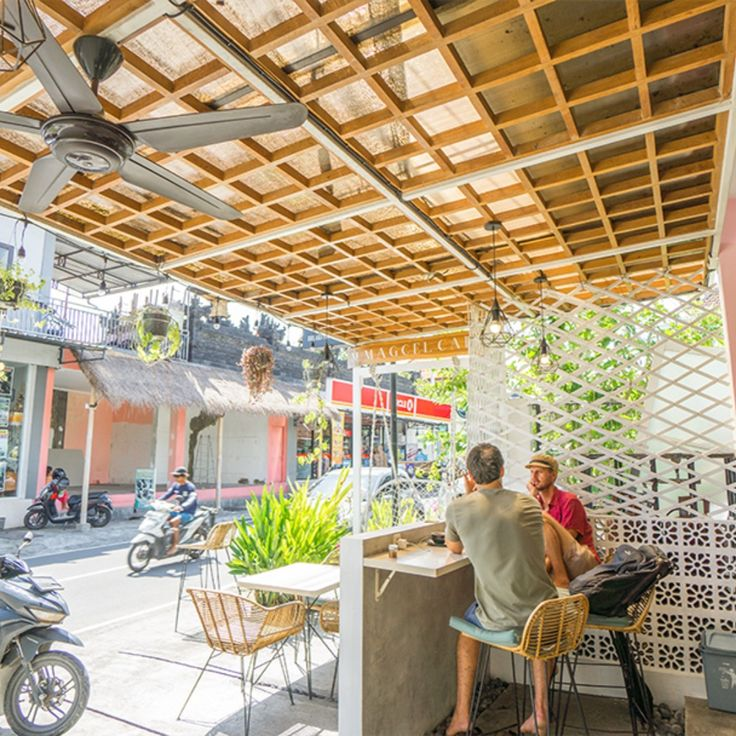
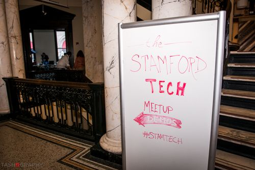

AI CLUB LOMBOK
5 AI TOOLS
that level up Lombok freelancers 📈
// learn them free at AI Club Lombok

TOOL 01
01
PROPOSALS & CLIENT EMAILS
Claude
Client proposals done in 2 minutes
// drafts, replies, proposals — in your voice
TOOL 02
02
DESIGN WITHOUT A DESIGNER
Canva Magic
Your IG feed, pro-level — no designer
// templates + Magic Studio do the work
TOOL 03
03
VIDEO EDITING
CapCut AI
Edit reels 10× faster — auto captions
// built-in auto-captions, free
TOOL 04
04
INSTANT DECKS
Gamma
Instant pitch decks for client meetings
// a full deck from a single prompt
TOOL 05
05
LEARN NEW SKILLS
NotebookLM
A free mentor, 24/7 — feed it any PDF or video
// upload a document, get a tutor

COMMUNITY · LOMBOK
We break these all down FREE 🌴
AI
AI CLUB LOMBOK
// Join the WhatsApp group — link in bio. Live at the next meetup.